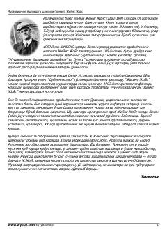

MYStiven Dedalusning bolalikdan o'smirlikkacha bo'lgan ruhiy va ma'naviy kamolot yo'li.
Ushbu roman mashhur irland yozuvchisi Jeyms Joysning avtobiografik asari bo'lib, unda bosh qahramon Stiven Dedalusning bolalik va o'smirlik davridagi ruhiy shakllanishi tasvirlanadi. Asar yosh bolaning atrof-muhitni qabul qilishi, oilaviy va ijtimoiy munosabatlar hamda o'z-o'zini anglash jarayonlarini chuqur psixologik tahlillar orqali ochib beradi.